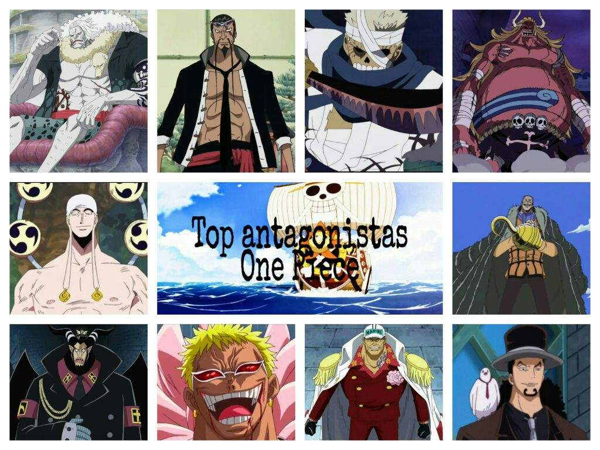

Antagonistas
A lo largo de la serie ha habido una gran cantidad de antagonistas, desde piratas, marines y miembros del Gobierno Mundial. Pues a lo largo de cada arco hay un antoginista diferente, en los primeros arcos los antagonistas eran unos piratas que usaban su poder e influencias para controlar a la gente y robarles todo el dinero.
Aunque a lo largo de estos arcos hubieron muchos más antagonistas, no obstante solo he mencionado a esos tres ya que son los que considero más relevantes. Esta claro que junto con estos piratas también estaban los miembros más importantes de sus tripilaciones, además también se encuentra algún miembro corrupto de la marina, el que para oda es el personaje que más le gusta, Buggy. A lo largo de la serie Buggy a tenido varias apariciones, pero no exclusivamente como un antagonista, sino como uno de los piratas más importantes. Aunque hasta ahora todos los méritos y por consecuente aumentos de recompensas, y rangos fueron en su mayoria por errores o confusiones, ya que este siendo el único que se encuentra casualmente en escenas importantes le acababan otorgando dichas azañas.
Saga East Blue
En los arcos del east blue los antagonistas más importantes fueron Arlong, Kuro (piratas) y Smoker (marine)Información relevante sobre los antagonistas de la Saga East Blue:
- Captain Kuro: Violento y astuto, intenta matar a Kaya para heredar su fortuna.
- Arlong: Un hombre pez que se hace pasar como líder de la isla Cocoyasi y esclaviza a los humanos.
Saga Arabasta
Información relevante sobre los antagonistas de la Saga Arabasta:
- Crocodile: Ex miembro de los Siete Guerreros del Mar y líder de Baroque Works, busca controlar el Reino de Alabasta.
- Mr. 1 y Miss Doublefinger: Agentes de Baroque Works con habilidades de transformación y corte.
Saga Water 7
Información relevante sobre los antagonistas de la Saga Water 7:
- Rob Lucci: Miembro del CP9 y principal antagonista de la saga. Tiene habilidades de transformación en leopardo.
- Spandam: Líder del CP9 y manipulador de los eventos en Water 7.
Saga Marineford
Información relevante sobre los antagonistas de la Saga Marineford:
- Akainu: Almirante de la Marina y uno de los principales antagonistas de la guerra.
- Blackbeard: Capitán de los Piratas del Barbanegra y se convierte en uno de los Emperadores del Mar.
Saga Dressrosa
Información relevante sobre los antagonistas de la Saga Dressrosa:
- Donquixote Doflamingo: Ex miembro de los Siete Guerreros del Mar y líder del submundo. Busca controlar Dressrosa y usar la Fábrica de SMILEs para sus propósitos.
- Trece: Oficiales ejecutivos de Donquixote Doflamingo, cada uno con habilidades únicas.
Saga Whole Cake Island
Información relevante sobre los antagonistas de la Saga Whole Cake Island:
- Big Mom: Yonko y líder de la familia Charlotte, busca casarse con Sanji para formar una alianza entre su familia y los Vinsmoke.
- Katakuri: Uno de los tres comandantes dulces de Big Mom y uno de los principales obstáculos para los Piratas del Sombrero de Paja.
Saga Wano
Información relevante sobre los antagonistas de la Saga Wano Kuni:
- Kaido: Yonko y gobernante de Wano Kuni, busca controlar el país y expandir su influencia.
- Orochi: Shogun de Wano Kuni y títere de Kaido, ha gobernado tiránicamente sobre el país durante años.